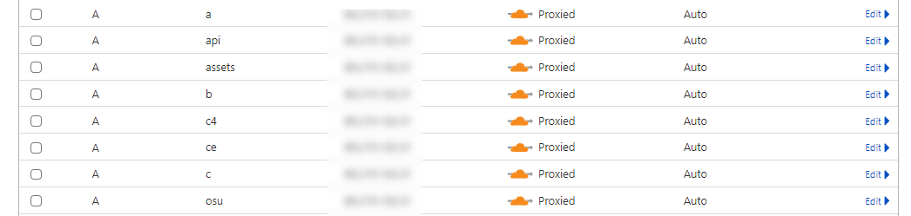

Installation Guide¶
Welcome to the osuNoLimits installation guide! This comprehensive walkthrough will help you set up a production-ready osu! private server using Shiina-Web and bancho.py-ex with the onl-docker Stack from the ground up.
Prerequisites Checklist
Before beginning the installation, please ensure you have:
- Linux Server — Ubuntu 24.04+ or Debian-based distribution recommended
- Domain Name — with full DNS management access
- Technical Knowledge — comfortable with command-line operations
- Time Allocation — approximately 20-30 minutes for complete setup
Domain Configuration¶
Proper DNS setup is crucial for your server's functionality. Configure the following subdomains to point to your server's IP address. We strongly recommend using Cloudflare for robust DNS management and enterprise-grade DDoS protection.
Required DNS Records
Create the following DNS records, all pointing to your server's IP address:
| Subdomain | Purpose | Example |
|---|---|---|
@ |
Main domain | osunolimits.dev |
osu |
Game client connection | osu.osunolimits.dev |
c |
Game server | c.osunolimits.dev |
c4 |
Game server | c4.osunolimits.dev |
a |
Avatar endpoint | a.osunolimits.dev |
assets |
Static assets | assets.osunolimits.dev |
api |
Bancho API | api.osunolimits.dev |
- Add your domain to Cloudflare
- Update nameservers at your registrar
- Create the A records listed above
- Enable proxy (orange cloud) for web traffic protection

SSL/TLS Configuration
Choose between flexible or strict SSL encryption based on your security requirements. For production environments, we strongly recommend Full (Strict) SSL mode with valid certificates for maximum security.
Version Control Best Practice
We highly recommend forking the repositories to your own GitHub account before proceeding. Benefits include:
- Easy Updates — seamlessly pull upstream changes
- Custom Modifications — maintain your own feature branches
- Configuration Backup — preserve your settings across updates
Installing the osuNoLimits Stack¶
Docker Installation¶
Docker is the foundation of the osuNoLimits stack, providing containerized deployment for all services. Select your operating system below to begin installation:
Cleanup First
Remove any conflicting Docker packages:
for pkg in docker.io docker-doc docker-compose docker-compose-v2 podman-docker containerd runc; do
sudo apt-get remove $pkg
done
Step 1: Add Docker's official GPG key and repository
sudo apt-get update
sudo apt-get install ca-certificates curl
sudo install -m 0755 -d /etc/apt/keyrings
sudo curl -fsSL https://download.docker.com/linux/ubuntu/gpg -o /etc/apt/keyrings/docker.asc
sudo chmod a+r /etc/apt/keyrings/docker.asc
Step 2: Add Docker repository to APT sources
echo \
"deb [arch=$(dpkg --print-architecture) signed-by=/etc/apt/keyrings/docker.asc] https://download.docker.com/linux/ubuntu \
$(. /etc/os-release && echo "${UBUNTU_CODENAME:-$VERSION_CODENAME}") stable" | \
sudo tee /etc/apt/sources.list.d/docker.list > /dev/null
sudo apt-get update
Step 3: Install Docker
Cleanup First
Remove any conflicting Docker packages:
for pkg in docker.io docker-doc docker-compose podman-docker containerd runc; do
sudo apt-get remove $pkg
done
Step 1: Add Docker's official GPG key and repository
sudo apt-get update
sudo apt-get install ca-certificates curl
sudo install -m 0755 -d /etc/apt/keyrings
sudo curl -fsSL https://download.docker.com/linux/debian/gpg -o /etc/apt/keyrings/docker.asc
sudo chmod a+r /etc/apt/keyrings/docker.asc
Step 2: Add Docker repository to APT sources
echo \
"deb [arch=$(dpkg --print-architecture) signed-by=/etc/apt/keyrings/docker.asc] https://download.docker.com/linux/debian \
$(. /etc/os-release && echo "$VERSION_CODENAME") stable" | \
sudo tee /etc/apt/sources.list.d/docker.list > /dev/null
sudo apt-get update
Step 3: Install Docker
Cleanup First
Remove any conflicting Docker packages:
sudo dnf remove docker \
docker-client \
docker-client-latest \
docker-common \
docker-latest \
docker-latest-logrotate \
docker-logrotate \
docker-selinux \
docker-engine-selinux \
docker-engine
Step 2: Add Docker repository
sudo dnf -y install dnf-plugins-core
sudo dnf config-manager --add-repo https://download.docker.com/linux/fedora/docker-ce.repo
Step 3: Install Docker
Step 4: Enable Docker service
Git Installation¶
Git is essential for cloning the repository and managing future updates. Follow the instructions for your operating system:
Step 1: Update package list and install Git
Step 2: Verify installation
Expected Output
You should see something like git version 2.34.1
Step 3: Configure Git (replace with your information)
Step 1: Update packages and install Git
Step 2: Verify installation
Expected Output
You should see something like git version 2.34.1
Step 3: Configure Git (replace with your information)
Repository Setup¶
Clone the onl-docker repository to your server to get started:
Using Your Fork
If you created a fork earlier, replace the repository URL below with your fork's URL. This makes pulling updates and managing custom changes much easier.
Custom Submodule Configuration
To use your own forked versions of shiina-web and bancho.py-ex, update the URLs in the .submodules file within onl-docker.
Environment Configuration¶
Initialize your configuration by creating copies of the example files:
cp .env.example .env
cp .config/caps.example.json .config/caps.json
cp .config/customization.yml.example .config/customization.yml
cp .config/logger.env.example logger.env
Configuration Editor¶
Open the main environment file for editing:
Critical Configuration Settings
The following settings are mandatory and must be configured before starting the server:
| Setting | Description | Required |
|---|---|---|
DOMAIN |
Your primary domain (e.g., osunolimits.dev) |
✅ |
DB_PASS |
Strong, unique database password | ✅ |
BANCHO_DISCORD_URL |
osu! API key — obtain here | ✅ |
SHIINA_TURNSTILE_KEY |
Cloudflare Turnstile public key — get yours here | ✅ |
SHIINA_TURNSTILE_SECRET |
Cloudflare Turnstile private key — get yours here | ✅ |
FLEXIBLE |
SSL mode: true for flexible, false for strict (default: true) |
✅ |
PROTOCOL |
Connection protocol: https recommended, use http only without Cloudflare (default: https) |
✅ |
Required for Full/Strict SSL Mode Only
Configure these paths only if using Full or Strict SSL encryption:
| Setting | Description | Example |
|---|---|---|
BANCHO_SERVER_NAME |
Your server's public display name | osuNoLimits |
BANCHO_DISCORD_URL |
Community Discord invite link | https://discord.gg/yourinvite |
BANCHO_DISCORD_URL |
Your Discord invite link | https://discord.gg/yourinvite |
BANCHO_ICON_URL |
In-game menu icon | URL to your icon |
BANCHO_ONCLICK_URL |
Click destination | Your website URL |
BANCHO_BGS |
Background images | Comma-separated URLs |
Installation Script¶
With your configuration complete, run the automated installation script:
The installer will guide you through the setup process, including:
- Dependency installation
- Service configuration
- Optional phpMyAdmin setup (prompted during installation)
Launch Your Server¶
With everything configured, you're ready to start your osuNoLimits server! Choose your preferred launch method:
Option 1: Detached with Screen (Recommended for SSH sessions)
Option 2: Detached Docker Compose
Option 3: Foreground Process
Server Started!
Your server should now be running. Monitor the logs for any startup errors and verify all services are operational.
Frequently Asked Questions¶
Find quick answers to common questions and troubleshooting tips below. We do have a Community Dev Discord
Installation & Setup¶
How to setup default avatar?
Nginx is looking in /home/onl-docker/.data/bancho/avatars for a default.jpg
Note: It can be possible that you need to reset permissions, help is in the section above
How can I receive donations through Shiina?
Currently, Ko-fi is the only supported payment provider.
Setup Steps:
-
Install the free Ko-fi plugin from the marketplace
-
Enable monetization:
-
Configure Ko-fi webhook:
-
Set up webhook at Ko-fi Webhooks Dashboard
- Webhook URL:
https://yourdomain.dev/handlekofi - Find your verification token under Advanced settings
- Webhook URL:
Configuration Example:
Donation Calculation
donationAmount represents the base price in your currency. For example, a $10 donation equals 10 months of supporter status.
How do I configure automatic anti-cheat bans?
Configure performance point limits to automatically detect and ban suspicious plays:
Sample PP Caps Configuration
Configuration Best Practices
- Set
"enabled": trueto activate the automatic banning system - Adjust PP thresholds based on your server's average skill level
- Regularly monitor audit logs for false positives
- Consider community feedback when tuning these values
Usage & Features¶
Why isn't my rank graph displaying?
Rank graphs require at least one week of historical data before they can be displayed. Be patient while your server collects player statistics.
Can I modify the source code?
Yes, but direct code modifications are not recommended as they can complicate future updates and cause merge conflicts. Instead, use the plugin and theme systems to extend functionality whenever possible.
Troubleshooting¶
Where can I find frontend logs?
Shiina automatically maintains logs with a 30-day rotation policy. Access them here:
How do I recalculate performance points (PP)?
To recalculate PP for all players, access the bancho container and run the recalculation script:
Step 1: Find the bancho container ID
Step 2: Access the container shell
Step 3: Navigate to tools and execute recalculation
Performance Note
PP recalculation can be resource-intensive. Consider running during off-peak hours for servers with many players.
© 2026 Marc Andre Herpers. All rights reserved.